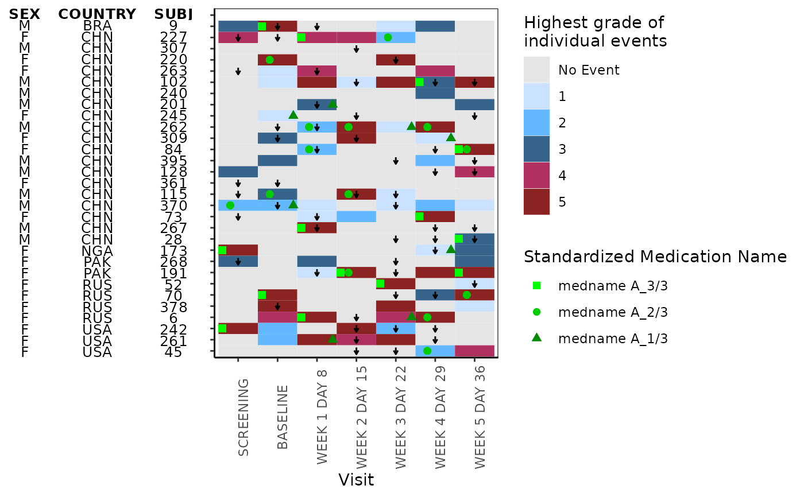

This function plots heatmap
g_heat_bygrade(
id_var,
exp_data,
visit_var,
ongo_var,
anno_data,
anno_var,
heat_data,
heat_color_var,
heat_color_opt = NULL,
conmed_data = NULL,
conmed_var = NULL,
conmed_color_opt = NULL,
xlab = "Visit",
title = NULL
)Arguments
- id_var
(`character`)
name of the column that contains the unique subject identifier shared by all data Usually it is"USUBJID".- exp_data
(`data.frame`)
exposure data. Usually it isADEX.- visit_var
(`character`)
name of the column that contains the analysis visit. Usually it is"AVISIT"- ongo_var
(`character`)
name of the column inexp_datathat contains the logical variable indicating whether the treatment is still ongoing. Usually it can be derived fromEOSSTT- anno_data
(`data.frame`)
annotation data that contains subject level characteristics. Usually it isADSL- anno_var
(`character`) a vector of columns name(s) to include for the annotation
- heat_data
(`data.frame`)
data frame that contains the information needed for the text over heatmap Usually it isADCM.- heat_color_var
(`character`)
name of the column that contains the heat grade- heat_color_opt
optional, (`character`)
a named vector that maps the names to heat colors- conmed_data
optional, (`data.frame`)
concomitant medicine data. Usually it isADCMdefault isNULL(no conmed plotted)- conmed_var
optional, (`character`)
concomitant medicine variable name. Must be a column name in conmed_data when conmed_data is provided. default isNULL(no conmed plotted)- conmed_color_opt
optional, (`character`)
vector of color name(s) to conmed_data- xlab
optional, (`character`)
string to be shown as x-axis label, default is"Visit"- title
(`character`)
string to be shown as title of the plot. default isNULL(no plot title is displayed)
Examples
library(scda)
library(dplyr)
ADSL <- synthetic_cdisc_data("latest")$adsl %>% slice(1:30)
ADEX <- synthetic_cdisc_data("latest")$adex %>% filter(USUBJID %in% ADSL$USUBJID)
ADAE <- synthetic_cdisc_data("latest")$adae %>% filter(USUBJID %in% ADSL$USUBJID)
ADCM <- synthetic_cdisc_data("latest")$adcm %>% filter(USUBJID %in% ADSL$USUBJID)
# function to derive AVISIT from ADEX
add_visit <- function(data_need_visit) {
visit_dates <- ADEX %>%
filter(PARAMCD == "DOSE") %>%
distinct(USUBJID, AVISIT, ASTDTM) %>%
group_by(USUBJID) %>%
arrange(ASTDTM) %>%
mutate(next_vis = lead(ASTDTM), is_last = ifelse(is.na(next_vis), TRUE, FALSE)) %>%
rename(this_vis = ASTDTM)
data_visit <- data_need_visit %>%
select(USUBJID, ASTDTM) %>%
left_join(visit_dates, by = "USUBJID") %>%
filter(ASTDTM > this_vis & (ASTDTM < next_vis | is_last == TRUE)) %>%
left_join(data_need_visit)
return(data_visit)
}
# add AVISIT in ADAE and ADCM
ADAE <- add_visit(ADAE)
#> Joining, by = c("USUBJID", "ASTDTM")
ADCM <- add_visit(ADCM)
#> Joining, by = c("USUBJID", "ASTDTM")
exp_data <- ADEX %>%
filter(PARCAT1 == "INDIVIDUAL") %>%
group_by(USUBJID) %>%
# create a shorter subject identifier
mutate(SUBJ = utils::tail(strsplit(USUBJID, "-")[[1]], n = 1)) %>%
mutate(ongo_var = (EOSSTT == "ONGOING")) %>%
ungroup()
anno_data <- ADSL %>%
select(SEX, COUNTRY, USUBJID) %>%
group_by(USUBJID) %>%
mutate(SUBJ = utils::tail(strsplit(USUBJID, "-")[[1]], n = 1)) %>%
ungroup() %>%
select(-USUBJID)
heat_data <- ADAE %>%
select(USUBJID, AVISIT, AETOXGR) %>%
group_by(USUBJID) %>%
mutate(SUBJ = utils::tail(strsplit(USUBJID, "-")[[1]], n = 1)) %>%
ungroup() %>%
select(-USUBJID)
heat_color_opt <- c(
"No Event" = "gray90",
"1" = "lightsteelblue1",
"2" = "steelblue1",
"3" = "steelblue4",
"4" = "maroon",
"5" = "brown4"
)
ADCM_lab <- rtables::var_labels(ADCM)
ADCM <- ADCM %>%
filter(
CMDECOD == "medname A_1/3" | CMDECOD == "medname A_2/3" | CMDECOD == "medname A_3/3"
) %>%
mutate(CMDECOD = factor(CMDECOD, levels = unique(CMDECOD)))
rtables::var_labels(ADCM) <- ADCM_lab
conmed_data <- ADCM %>%
group_by(USUBJID) %>%
mutate(SUBJ = utils::tail(strsplit(USUBJID, "-")[[1]], n = 1))
# example plotting conmed
g_heat_bygrade(
id_var = "SUBJ",
exp_data,
visit_var = "AVISIT",
ongo_var = "ongo_var",
anno_data,
anno_var = c("SEX", "COUNTRY"),
heat_data,
heat_color_var = "AETOXGR",
heat_color_opt,
conmed_data,
conmed_var = "CMDECOD",
conmed_color_opt = c("green", "green3", "green4")
)

# example not plotting conmed
g_heat_bygrade(
id_var = "SUBJ",
exp_data,
visit_var = "AVISIT",
ongo_var = "ongo_var",
anno_data,
anno_var = c("SEX", "COUNTRY"),
heat_data,
heat_color_var = "AETOXGR",
heat_color_opt
)